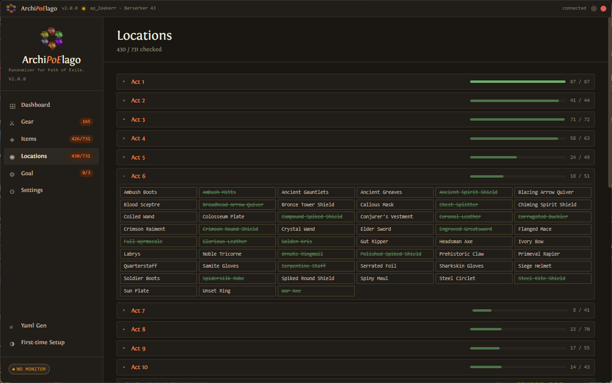
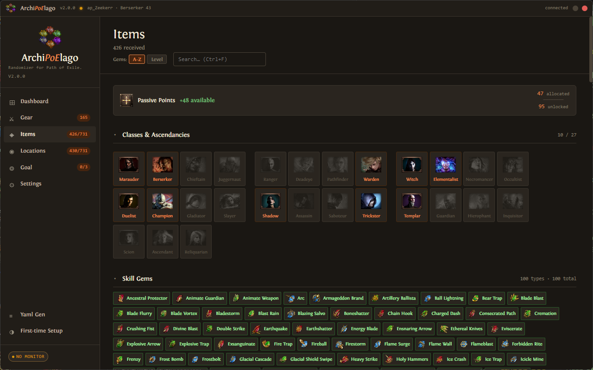
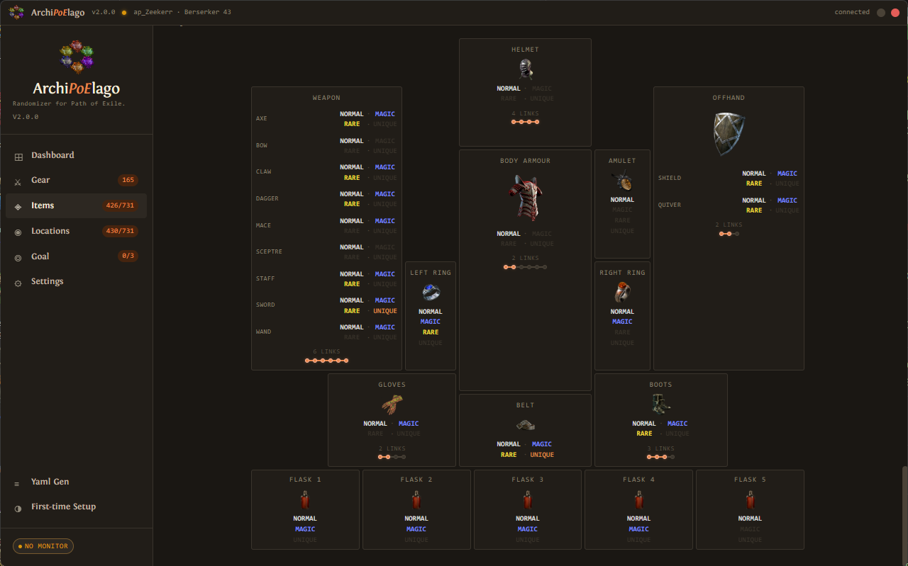
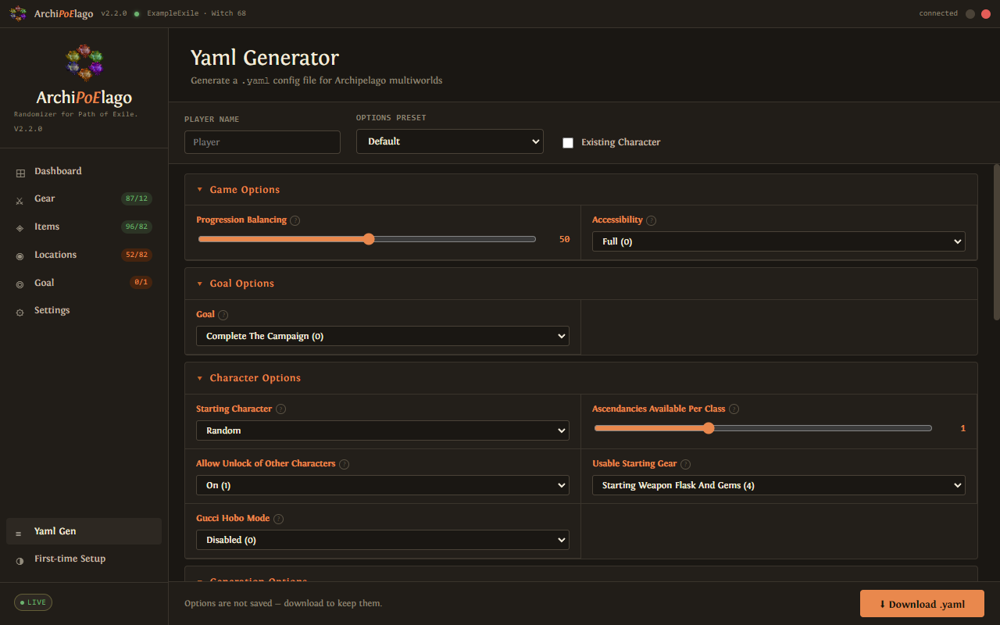
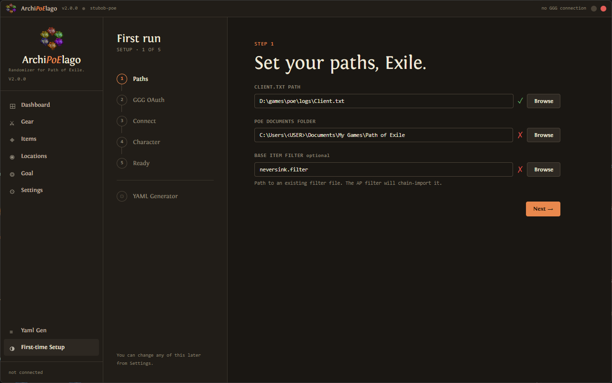
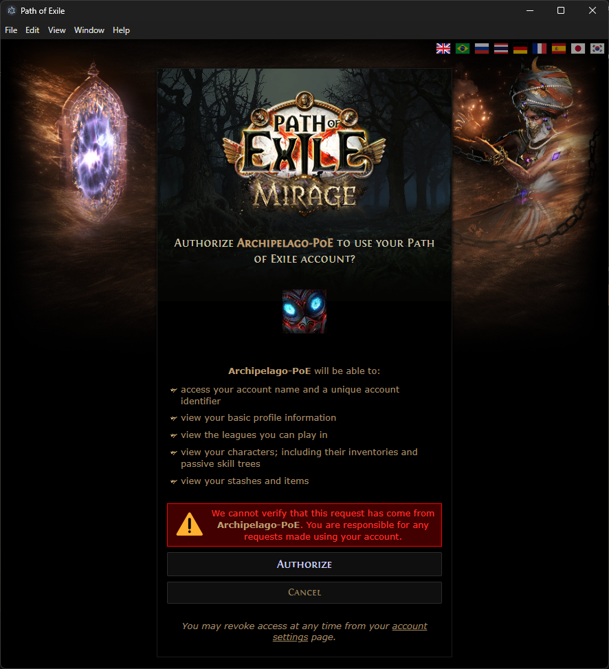
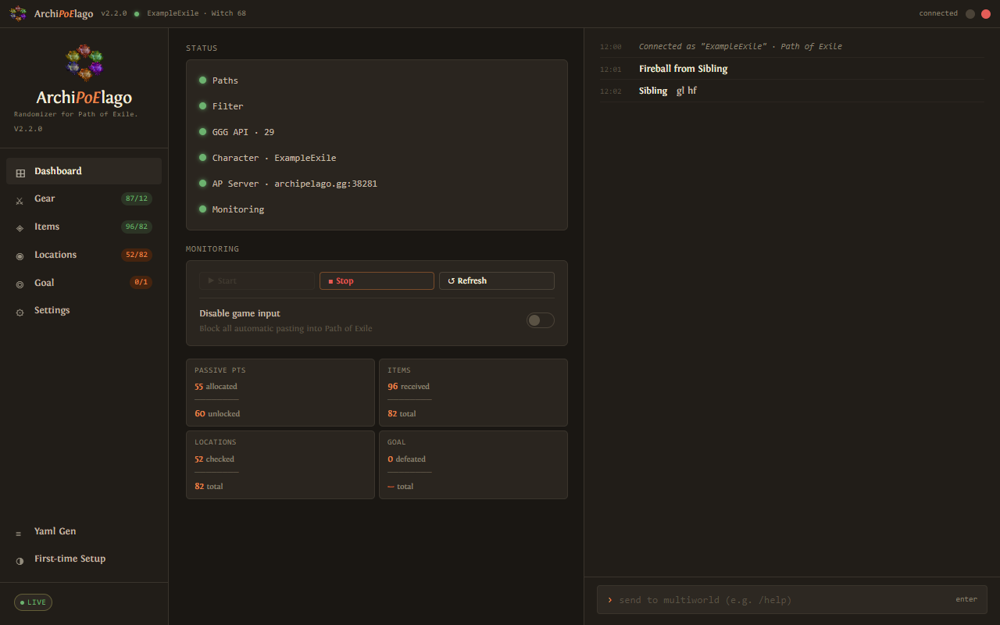
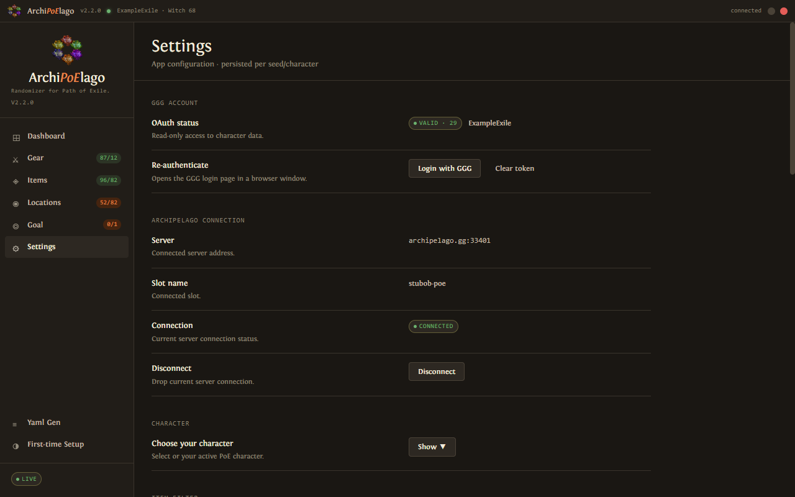
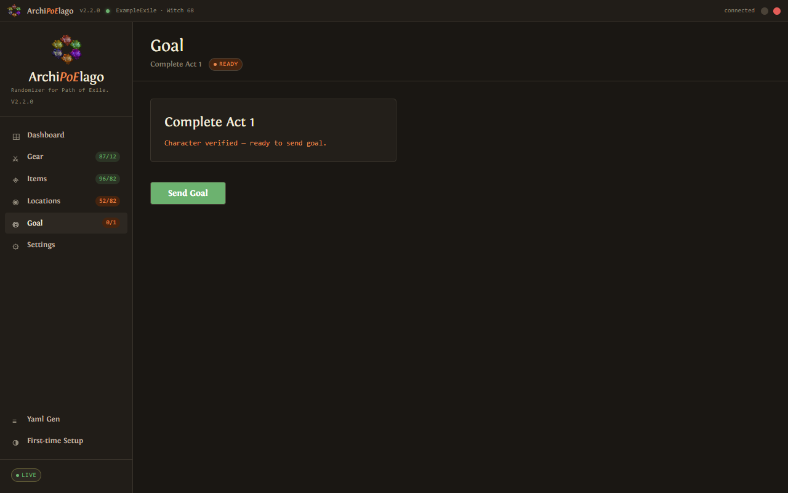
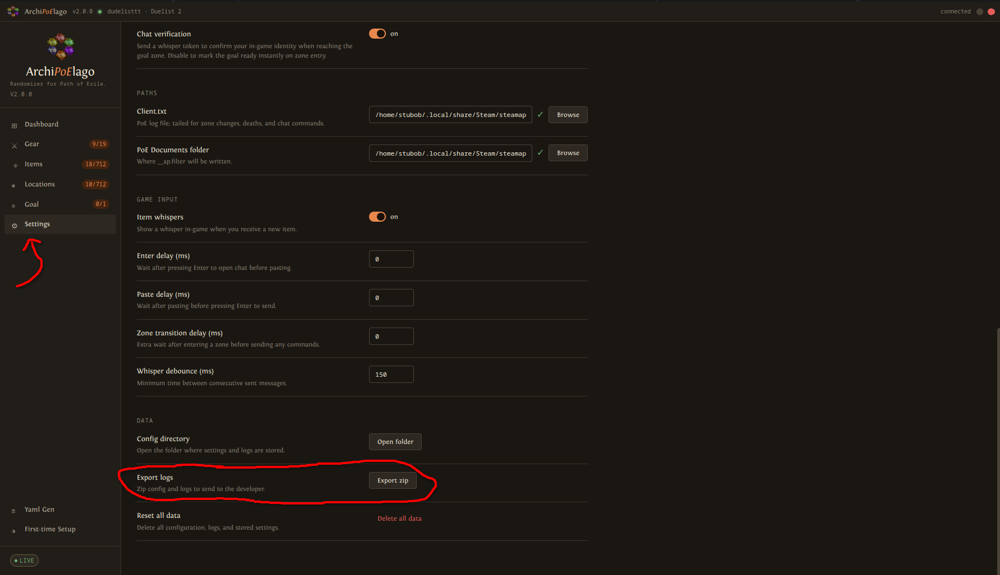

What is Archipelago?
Archipelago is a free, open-source multiworld randomizer. It shuffles the items of one game into the world of another — so when you level up in Path of Exile, you might unlock a power-up for your friend playing Super Mario 64, and vice versa.
You can also play completely solo: your Path of Exile progression gets shuffled with itself, so you earn your skills, gems, and gear slots as rewards instead of starting with them.
No. The client only reads your Client.txt log file and the public PoE API, then writes to your
local item filter. It uses one-button-one-action macros and nothing else. Everything it does is something
a regular player could feasibly do manually.
How It Works in PoE
The Archipelago client runs alongside Path of Exile. It never touches the game's files directly — it watches what you do and reacts:
Your item filter highlights what matters.
The client modifies your local loot filter to highlight items that would send a check, and stops highlighting items you've already checked. Optional audio cues announce incoming unlocks — and their magnitude too, so you know at a glance whether something important just arrived.
You pick up an item or level up.
The client watches your inventory, through GGG's API, when you change zones. Qualifying items (specific base types) count as "checks" and send items to other players.
You receive unlocks from the multiworld.
When you (or a teammate) checks a location, you might receive a skill gem, a gear slot upgrade, passive points, or a new character class. The client tells you what arrived.
You can only use what you've unlocked.
Equipping something you haven't unlocked puts you "out of logic" and blocks further check
sends until you correct it. Whisper yourself !gear or !gems to see
what's allowed.
Checks are only sent when you change zones. If you pick something up and nothing happens right away, don't panic — just walk through a waypoint or door.
What Gets Shuffled?
Locations (things you do to send checks)

Items (things you can receive as unlocks)


In a normal PoE run you pick up any gem and equip any item you find. Here, you start with almost nothing — you'll earn the right to use gems, wear better gear, and spend passive points as rewards for exploring the world. Think of it like starting a run with a locked skill tree that you gradually unlock by playing.
Highly Configurable
Almost every aspect of your run can be tuned in your .yaml settings file before generating. You don't
have to accept the defaults — tailor the experience to your group's preferred difficulty and play style.
How Much Setup Do You Want?
The mod is flexible about where you start. At one extreme you can drop straight into an existing endgame character — just refund all your passive points with Orbs of Regret, unequip your gear, and the client will treat you as starting from scratch. At the other extreme you can create a brand-new character in an SSF league for a completely clean slate with no shared stash or trade to fall back on. Everything in between works too.
Existing Character Mode
Got an existing character and want a faster game? Unequip all your gear and refund every passive point. Set your goal to kill a specific boss — or more than one — and include gems, passives, and gear in the shuffle. Launch the game and build around whatever the multiworld hands you. No planning, no preset build — just react and adapt until you kill the boss. All the Archipelago experience without levelling a character from scratch.
Goal
Choose what ends your run. Options range from simply completing the campaign to killing specific pinnacle bosses like Shaper, Elder, or Maven. You can also set a custom kill count or boss checklist.
Starting Conditions
Control how much you begin with. starting_character sets your class (or leaves it random).
usable_starting_gear lets you keep your starting weapon and flasks so the very early game isn't completely blind.
Item Pool
Toggle whether passive skill points, level milestones, and specific gem categories are included in the shuffle. A larger pool means more checks to send and receive — the run itself isn't necessarily longer, but there's more going on and more items flowing between players. A smaller pool is tighter and more focused.
Progression Balancing
Archipelago can weight the item pool so that key unlocks — like your needed skill gems, gear unlocks, or ascendancies —
tend to arrive early rather than being buried in late checks. Adjust the progression_balancing
slider in your .yaml to control how aggressively it front-loads important items.
Before You Begin
Path of Exile — installed and playable. Free download here.
ArchiPoElago client — the standalone PoE randomizer client. Download from github.com/stubobis1/Path-of-Exile-Archipelago-Client.
Know the path to your PoE Client.txt log file — usually somewhere like
C:\Program Files (x86)\Grinding Gear Games\Path of Exile\logs\Client.txt
Optional: Have a local item filter file saved on your PC — not a subscribed one.
Usually in C:\Users\YOU\Documents\My Games\Path of Exile\.
Any NeverSink variant works fine as a base. If you skip this, the client won't apply your normal gameplay filter,
but everything else still works.
Step 1 · Install Archipelago
Download the latest Archipelago installer from github.com/ArchipelagoMW/Archipelago/releases.
Get the .exe installer, not the source code archives.
Run the installer and choose a convenient folder (e.g. C:\Games\Archipelago).
Launch ArchipelagoLauncher.exe from that folder to confirm it works.
Consider making a desktop shortcut — you'll use this often.
Step 2 · Add the Path of Exile .apworld
Download the latest poe.apworld file from
github.com/stubobis1/Archipelago/releases.
Again, grab the .apworld file — not the source code.
Copy that file into the custom_worlds folder inside your Archipelago installation.
(e.g. C:\Games\Archipelago\custom_worlds\poe.apworld)
Do not extract or rename it — just drop the file in.
Step 3 · Generate or Join a Game
You need a .yaml settings file that tells Archipelago what kind of run you want.
Option A — YAML Generator (recommended)
Open the ArchiPoElago client and click YAML Generator in the sidebar.
Fill in the options — each one has a description. When done, click Export YAML

.yaml.Option B — Manual template
In ArchipelagoLauncher.exe, click Generate Template Options, then open Archipelago/Players/Templates/Path of Exile.yaml in any text editor, and modify to your liking.
If you are hosting (solo or with friends)
Gather each player's YAML file and place it in the Archipelago/Players/ folder.
Click Generate in the Launcher. This creates an archive in the output/ folder.
Upload the archive to archipelago.gg or multiworld.gg to host online without port-forwarding — just share the room link
Alternatively, Click Host in the Launcher and select that archive. The server runs on port 38281 by default.
Share your IP and port with teammates.
If someone else is hosting
Send the host your .yaml file and make sure they have the same poe.apworld version.
Get the server address and use the slot name from your .yaml file when connecting.
Step 4 · Download & Set Up the ArchiPoElago Client
The PoE randomizer uses its own standalone client called the ArchiPoElago client.
You do not launch it from ArchipelagoLauncher.exe — download and run it separately.
Run the ArchiPoElago client. The first launch opens a five-step setup wizard.
Onboarding Wizard
Paths — The client tries to detect your paths automatically. Confirm or set:
- Client.txt — PoE's log file, e.g.
C:\...\Path of Exile\logs\Client.txt - PoE documents folder — where your filters live, e.g.
C:\Users\USER\Documents\My Games\Path of Exile\ - Base item filter (optional) — an existing filter (e.g. NeverSink) the AP filter will chain-import to keep your normal item highlighting.

GGG Login — Click Login with GGG. A browser window opens the GGG login page.
Approve the read-only access request (character and item data only — no account changes). The browser redirects back automatically.

Connect to Archipelago — Enter your server address (e.g. archipelago.gg:38281), slot name, and password (if any). Click Connect.
Character — Select the PoE character you will be playing. The client reads that character's gear and gems from the GGG API to validate your state on each zone change.
If your character isn't in the list, make sure you've logged into PoE at least once with it after completing OAuth.
Ready — Click Open Dashboard. The status indicators should be green for AP connection, OAuth, Client.txt, and item filter. Click Start Monitoring on the dashboard.

Launch Path of Exile normally (Steam or standalone). Log in with the character you selected.
Enter a zone — the client validates your state, activates the item filter, and sends any initial checks. Welcome to the randomizer!
DeathLink (Optional)
DeathLink is an optional Archipelago feature that links deaths across the entire multiworld. When you die in Path of Exile, a death signal is sent to every other DeathLink-enabled player — and when anyone else dies, you all die.
In Path of Exile specifically, receiving a DeathLink signal does not kill your character — instead the client logs you out to the character select screen. You re-enter the game at your last town or checkpoint, avoiding any XP loss or Hardcore consequences from other players' deaths.
It's entirely opt-in per player. Enable it in your .yaml before the run starts, or toggle it
mid-run with !deathlink whispered to yourself in PoE.
!deathlink to yourself in PoE chat to toggle it on or off without restarting. You can also set it in your .yaml before the run.In-Game Chat Commands
Whisper these commands to your own character in PoE chat.
For example: @YourCharName !gems
All other settings (paths, character, filter, connection) are configured in the the ArchiPoElago client GUI — no console commands needed.
Tips & Troubleshooting
- Keep the ArchiPoElago client open the entire time you play — it shows item sends, receives, and player names in real time. Check the Dashboard status indicators are green before entering a zone.
- Checks only fire on zone change. Nothing happening after a pickup is normal — just move to a new area.
- If you're using a gem or gear piece you haven't unlocked, you're "out of logic" and checks won't send. Whisper yourself
!gearor!gemsto see what's allowed, or check the Equipment tab in the client. - If your item filter isn't updating, open the ArchiPoElago client Settings → Item Filter and click Regenerate filter. Make sure your PoE Documents path is correct and that OneDrive sync isn't locking the folder.
- Everything from paths and OAuth to the AP connection and active character lives in the Settings page — check there first if something looks wrong.

Settings — OAuth status, Archipelago connection, and character selection all in one place. - The Goal button enables as soon as you enter the goal zone; the Goal tab shows a Send Goal button once your character is verified.

Goal tab — ready to send once the character is verified against the goal condition. - If filter commands or whispers fire while PoE isn't focused, they'll land in global chat. Increase the Zone transition delay in Settings → Game Input by 50–100 ms.
- Town Portals are your friend — drop items off at the stash to check them without needing to reach a full transition zone.
- The early levels before your first few gems arrive can be rough. There's no shame in starting with your class weapon, starter gem, and flasks unlocked in your yaml settings.
- Many "bad" endgame skills are perfectly fine for clearing the campaign. Use whatever you've been given!
- The Goal button enables as soon as you enter the goal zone. Click it and confirm to finish the run.
- Report bugs in the
GitHub issue tracker
or ask in the Path of Exile Archipelago Discord channel. Attach a log export — Settings → Data →
Export zip bundles your config and logs into one file for the developer.

Settings → Data — Export zip bundles config and logs for a bug report.